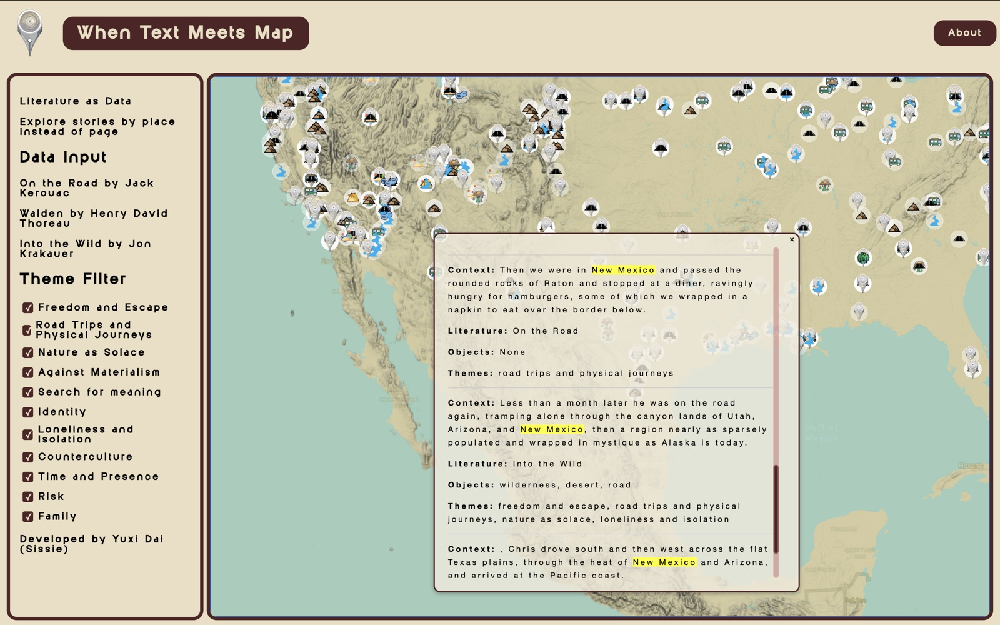
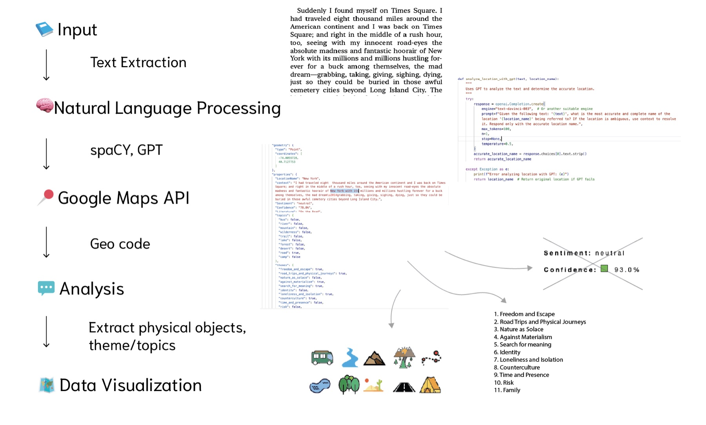
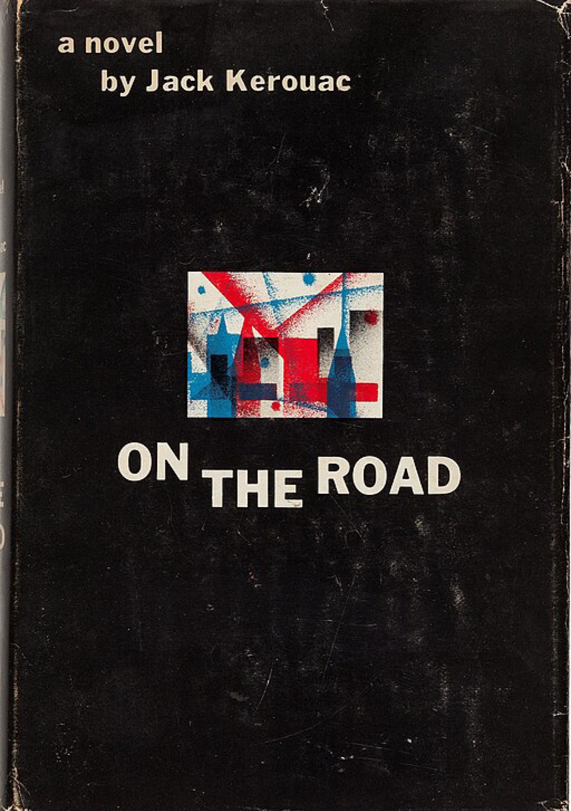
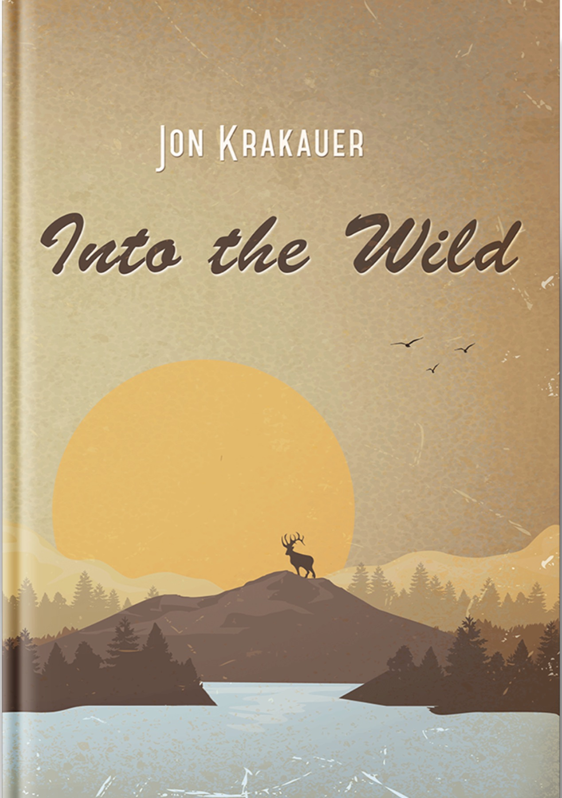
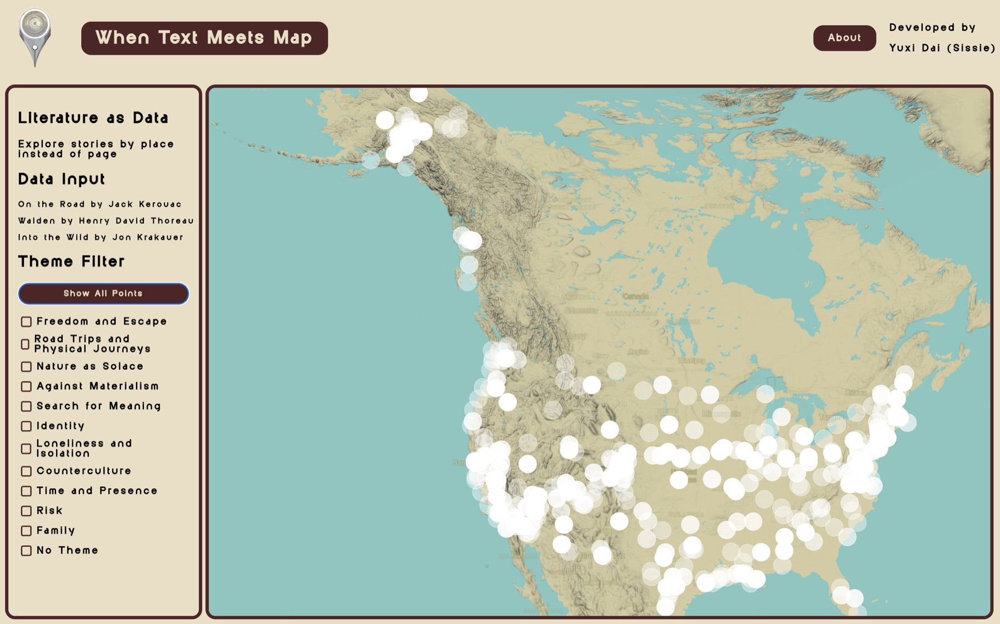
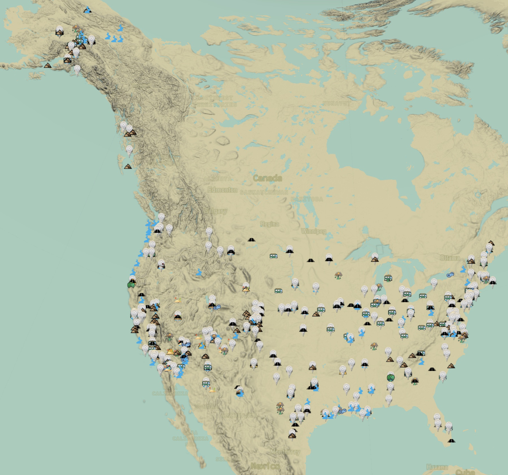

Interactive storytelling
When Text Meets Map
What happens when you read a book through its places?
{kind=link}

The starting point
A story has a geography.
Books carry places with them: named destinations, passing landscapes, and the routes between them. When Text Meets Map begins with that connection, asking how a reader might experience a story by exploring where it unfolds.
{kind=link}

{kind=link}
Taking shape
From words to journeys.
The project extracts locations from Walden, On the Road, and Into the Wild, then brings them into interactive maps. Computational text analysis and geospatial visualization connect literary passages with the places they describe.
The experience
Another way to read.
Readers can trace the paths of characters, ideas, and emotions across a map. The result places geographic exploration alongside reading, making the relationship between text and landscape something to navigate.
Explore the interactive maps ↗{kind=link}

{kind=link}

{kind=link}

{kind=link}

Project notes
The project was exhibited with the Spatial Intelligence Association in East Village, New York.
Project notes
- Type: Narrative Mapping
- Focus: Data Visualization
- Technology: NLP, Web-based Mapping, AI-assisted Toolkits
- Innovation: Text-Spatial Integration
Tools & methods
- Python & Natural Language Processing
- Named Entity Recognition
- GeoJSON Processing
- Mapbox GL JS
- Interactive Storytelling
- html, css, javascript